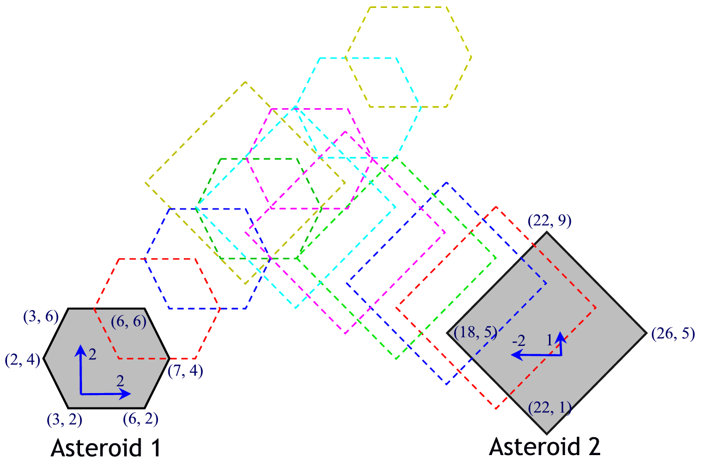

ACM-ICPC World Finals 2015 · Problem B
The year is 2115. The asteroid communication relay system was set up a decade ago by the Asteroid Communication Ministry. It is running fine except for one small problem – there are too many asteroids! The smaller ones not only keep interfering with the signals from the relay stations but they are also a danger to all the maintenance aircrafts that fly between the stations. These small asteroids must be destroyed! The Interplanetary Coalition to Prevent Catastrophes (ICPC) has been charged with removing these dangerous asteroids and has hired an elite team of hot-shot pilots for the job. Han Duo is the captain of this team of asteroid destroyers. Armed with his missiles, Han flies through the asteroid belt blowing up any asteroid that the ICPC deems a nuisance.
The ICPC is having some unfortunate budgetary problems. One result of this is that Han and his team do not have as many missiles as they would like, so they cannot blow up all the troublesome asteroids. But the asteroids are small and the missiles are powerful. So if two asteroids are near each other and line up properly, it is possible to take out both with a single missile.
Han’s screen displays asteroids as non-rotating two-dimensional simple convex polygons, each of which moves at a fixed velocity. He has decided that the best time to hit two asteroids is when the overlap of the two polygons is at a maximum. For example, Figure B.1, which illustrates Sample Input 1, shows two asteroids and snapshots of their subsequent positions at 1-second intervals. The two asteroids start touching after 3 seconds and the maximum overlap area occurs between 4 and 5 seconds.

Calculating when the maximum overlap occurs for two asteroids requires a bit of programming, but unfortunately Han slept through most of his coding classes at the flight academy. This is where you come in.
The input consists of two asteroid specifications. Each has the form n x1 y1 x2 y2 … xn yn vx vy where n (3 ≤ n ≤ 10) is the number of vertices, each xi, yi (−10 000 ≤ xi, yi ≤ 10 000) are the coordinates of a vertex of the asteroid on Han’s screen given in clockwise order, and vx, vy (−100 ≤ vx, vy ≤ 100) are the x and y velocities (in units/second) of the asteroid. The xi, yi values specify the location of each asteroid at time t = 0, and the polygons do not intersect or touch at this time. The maximum length of any side of an asteroid is 500. All numbers in the input are integers.
Display the time in seconds when the two polygons have maximum intersection, using the earliest such time if there is more than one. If the two polygons never overlap but touch each other, treat it as an intersection where the common area is zero and display the earliest such time. If the polygons never overlap or touch, display never instead. You should consider positive times only. Your output should have an absolute or relative error of at most 10−3.
6 3 2 2 4 3 6 6 6 7 4 6 2 2 2 4 18 5 22 9 26 5 22 1 -2 1
4.193518
4 0 0 0 2 2 2 2 0 -1 1 4 10 0 10 2 12 2 12 0 1 1
never